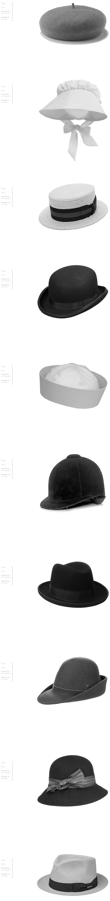

1장의 Wool이나 Felt로 만들었으며 머리
에 밀착되는 스타일이다. 원래는 프랑스 남
쪽에서 남성을 위하여 검정과 감색으로 만
들어 썼으나 요즈음은 스포츠용으로 쓰고
빛깔도 다양하다.
여성 ·아동 또는 유아를 위하여 부드러운
천으로 만들며, 뒤에서부터 머리 전체를 감
싸고 주로 턱밑에서 끈으로 매며 모자 가장
자리를 러플로 장식한다.
평평하고 둥근 크라운과 브림이 있으며, 리
본으로 장식하는 밀짚모자이다. 19세기 말~
20세기 초 남성들이 보트를 탈 때 애용하였
다.
둥근 크라운과 양 옆이 약간 올라간 좁은
브림이 달린 형태로서 빳빳하며 주로 검정
펠트로 만든 모자이다. 원래는 영국의 비즈
니스맨이 정장차림을 할 때 쓴 것으로, 미
국의 더비와 비슷하다. 1850년경 W.볼러
에 의해 디자인되었다 해서 이 이름이 붙
었다.
미국 해군들이 쓰는 모자인데, 주로 흰색이
고, 크라운이 여러쪽의 삼각형 천으로 되어
있으며 위로 꺾인 브림에 스티치를 박은
스타일이다. 거브 해트(gob hat)라고도 한
다. 또, 여성 또는 소년들의 밀짚모자로, 편
평한 크라운과 스트레이트 브림이 달린 스
타일도 있다. 1820년경~1890년경까지 운
동용으로 인기가 높았으며, 리본이나 밴드
로 장식하였다.
둥근 크라운에다 앞에 챙이 달려 있고, 크
라운은 주로 2가지 색상의 새틴을 삼각형
으로 잘라서 이어붙여 만든다. 운동 경기용
특히 기수용으로 쓴다. 1960년 중반 여성
용으로 유행하였다.
부드러운 펠트 천으로 크라운의 가운데가
움푹 들어가고 좁은 브림이 휘어 올라가게
만든 스타일의 모자이다. 1870년경부터 정
장 차림을 할 때 남성이 착용한 모자이다.
부드러운 펠트 천으로 만들며, 뒤의 브림은
휘어 올라가고 앞은 약간 내려졌으며 크
라운에는 리본을 두르고 옆에 깃털을 꽂아
장식한다.
크라운이 높고 브림이 없거나 아주 좁게 달
렸으며, 짧은 머리일 경우 모두 감싸도록
되었으며, 거의 눈썹아래까지 눌러 쓰는 것
이 특색이다. 1920년대와 1960년대에 유
행한 스타일의 모자이다.
곱고 옅은 빛깔의 파나마풀로 만든 모자가
본래의 것이나, 오늘날은 파나마풀과 비슷
한 섬유로 만든 것도 이렇게 부른다. 여름
에 쓰는 남성용 모자이다.